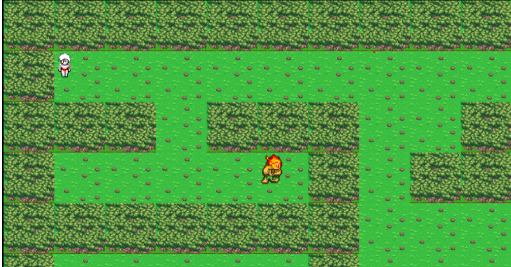

A floresta está clamando por ajuda! Você consegue salva-la?
Entre na aventura do Anhangá e descubra sua missão para restaurar a vida, proteger os animais e impedir a destruição da natureza.
JOGAR AGORA
Há muito tempo, os espíritos guardiões observam em silêncio a destruição da floresta.
Agora, o antigo espírito Anhangá desperta e procura alguém corajoso para restaurar o equilíbrio.
Esse alguém… é você.
Quem é, e porque Anhangá?
Anhangá é uma figura presente no folclore indígena brasileiro, especialmente entre povos Tupi e Guarani.
Ele é descrito como:
um espírito protetor da natureza,
guardião das florestas,
defensor dos animais,
vigilante contra a destruição causada pelos humanos.
Em muitas tradições, o Anhangá aparece como:
um veado branco com olhos de fogo,
ou uma presença espiritual invisível,
capaz de alertar, proteger e punir quando a natureza é ameaçada.
Ele não é um “demônio”, como alguns pensam superficialmente; no folclore original, ele é um guardião, uma entidade que vela pelo equilíbrio da floresta.
Nível 1: libertar os animais que estão presos na floresta.
Usando as setas, movimente o jogador para se encontrar com o Curupira, ele sabe o que deve ser feito!

Nível 2: Encontrar focos de incêndio para evitar o desmatamento.
Segue o mesmo principio do nivel 1, ao encontrar com o Curupira, ele te falará o que fazer!

Esse não é só um jogo. É um convite para refletir!
Você tem sido consciente em ajudar a natureza?
Você sabe a importânciados animais na floresta?
Você sabe a importância de acabar com o desmatamento?
Venha descobrir!
Como jogar?
Funciona no navegador
Sem instalar nada
Leve, bonito e educativo
Ao se aproximar do animal ou do fogo, responda as perguntas para salvar a floresta!
COMECAR A AVENTURA